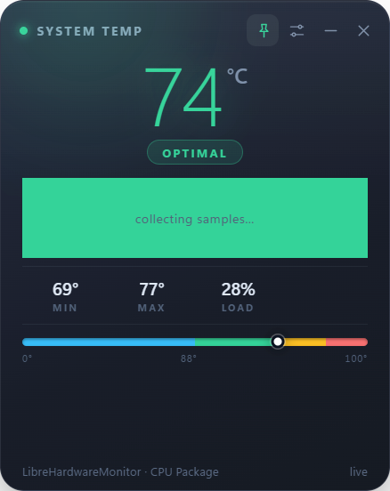

Monitor Your CPU Temperature Beautifully
⬇️ Download for Windows 📦 View on GitHubWindows 10/11 • 110 MB • Free & Open Source
✨ Auto-installer included - just 3 clicks to install!

Click the download button above to get TempSticky-Setup-1.0.0.zip (110 MB)
Right-click the ZIP file → "Extract All" → Choose any folder
Double-click "Install TempSticky.bat" → Everything installs automatically!
✨ The installer automatically sets up everything - just click "Yes" when asked for permission!